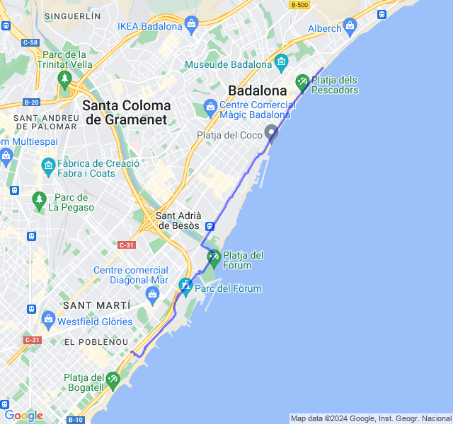
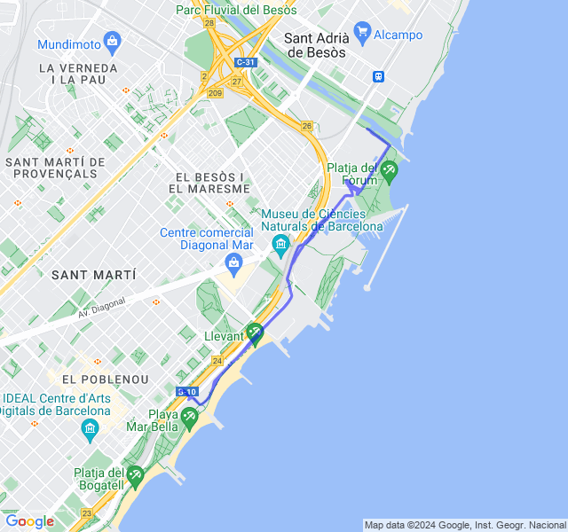
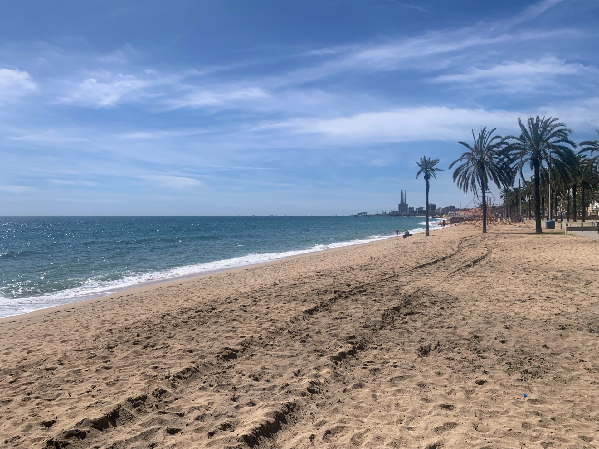
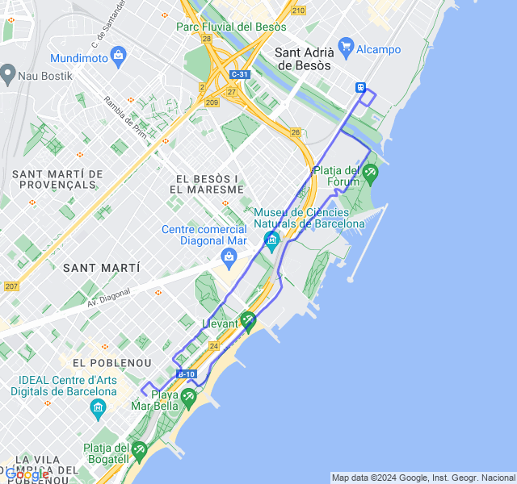
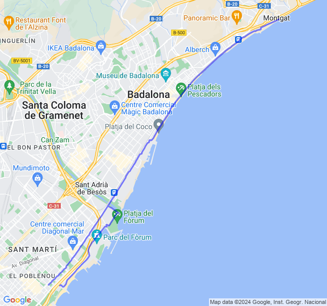
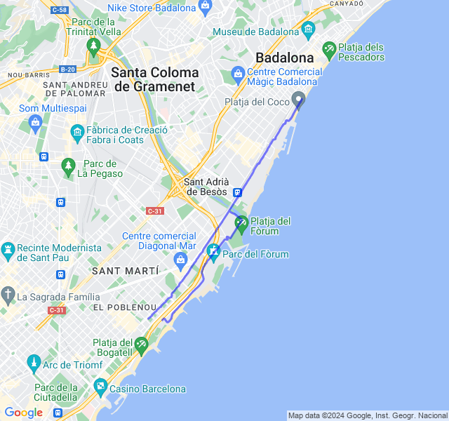

Settimana 14
Ultima settimana piena prima dello scarico!
Prima uscita
14km Z1 + andature + allunghi.

Dopo il lungo di Sabato la settimana inizia un giorno dopo causa festa. Tutto tranquillo, gambe ancora un po' rigide, soprattutto dopo la corsa più che durante.

Seconda uscita
10x400 Z5 (VDOT 3:26). Eccoci con un altro bell'allenamento di quelli che piacciono al coach ☠️! Nella prima metà avevo i quadricipiti ancora un po' pesanti dal lungo ma poi si son sciolti un po'. Mi pare andato abbastanza bene.

Terza uscita


Quarta uscita
5x2000 Z3 (VDOT 4:15) rec 1000 Z2. Come al solito i 4:15 del VDOT per la Z3 son un po' ottimisti e ho puntato da subito a stare sui 4:20 monitorando anche la FC. Andato direi bene, FC sempre in Z3 e, a parte la seconda parte controvento, anche nei recuperi la FC scendeva bene.

Quinta uscita
12km Z2. Allenamento di ieri scambiato con il lungo per incastri vari. Tutto bene, dopo un paio di settimane una Z2 con un buon passo e FC al suo posto 😜
